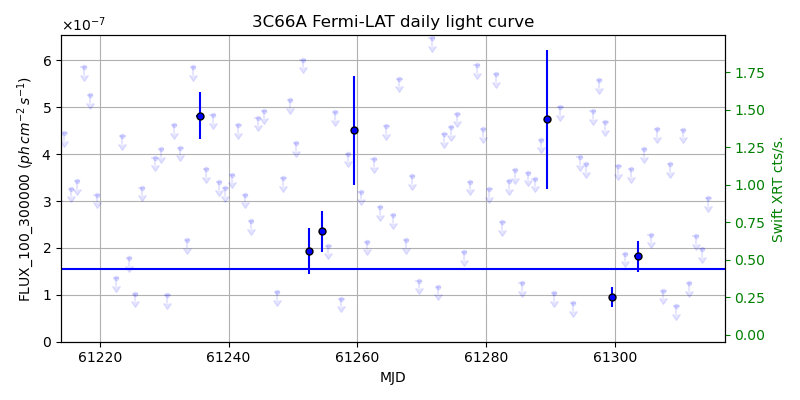
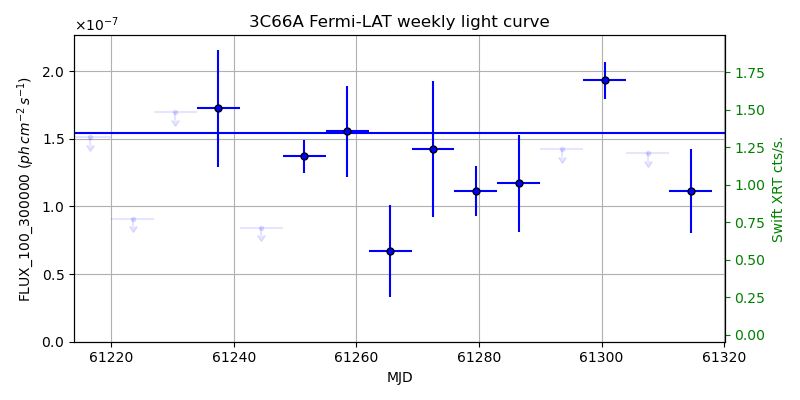
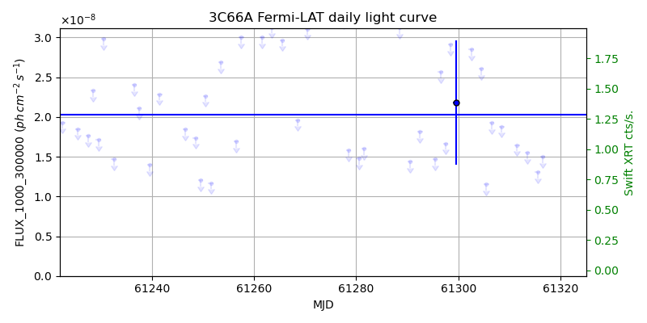
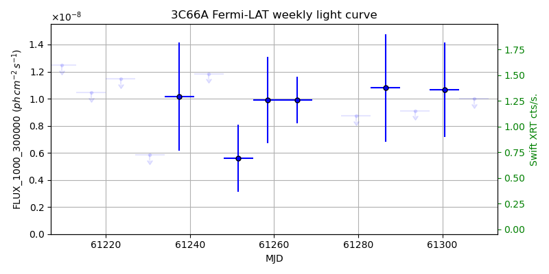

LAT Lightcurve site: https://fermi.gsfc.nasa.gov/ssc/data/access/lat/msl_lc/source/3C_66A
Swift site: https://www.swift.psu.edu/monitoring/source.php?source=3C66A
NED: Query
Time of last update of this page: UT: 2026-10-10 15:12 (MJD: 61323.634)
| Property | Value |
|---|---|
| R.A. | 2:22:39.60 |
| Dec. | 43:02:06.0 |
| z | 0.370 |
| 3FGL SpectrumType | LogParabola |
| 3FGL PL Index | |
| 3FGL Flux_100_300000 | 1.54e-07 1 / (s cm2) |
| 3FGL Flux_1000_300000 | 2.02e-08 1 / (s cm2) |
| 3FGL Flux >200 GeV | 9.90e-11 1 / (s cm2) |
| 3FGL Extrap. Crab >200 GeV | 0.42 |
| 3FGL Flux After EBL Absorption >200GeV | 2.24e-11 1 / (s cm2) |
| 3FGL EBL Crab Fraction >200GeV | 0.10 |

| MJD | dMJD | Flux | dFlux | Frac3FGL | FracCrab>200GeV | EBLFracCrab>200GeV |
|---|---|---|---|---|---|---|
| 61317.50 | 0.50 | 2.25e-07 | 3.01e-08 | 1.46 | 0.62 | 0.14 |
| 61318.50 | 0.50 | 2.07e-07 | 0.00e+00 | 0.00 | 0.00 | 0.00 |
| 61319.50 | 0.50 | 2.45e-07 | 0.00e+00 | 0.00 | 0.00 | 0.00 |
| 61320.50 | 0.50 | 9.91e-07 | 0.00e+00 | 0.00 | 0.00 | 0.00 |
| 61322.50 | 0.50 | 9.65e-05 | 0.00e+00 | 0.00 | 0.00 | 0.00 |

| MJD | dMJD | Flux | dFlux | Frac3FGL | FracCrab>200GeV | EBLFracCrab>200GeV |
|---|---|---|---|---|---|---|
| 61286.50 | 3.50 | 1.17e-07 | 3.59e-08 | 0.76 | 0.32 | 0.07 |
| 61293.50 | 3.50 | 1.42e-07 | 0.00e+00 | 0.00 | 0.00 | 0.00 |
| 61300.50 | 3.50 | 1.93e-07 | 1.36e-08 | 1.25 | 0.53 | 0.12 |
| 61307.50 | 3.50 | 1.39e-07 | 0.00e+00 | 0.00 | 0.00 | 0.00 |
| 61314.50 | 3.50 | 1.11e-07 | 3.11e-08 | 0.72 | 0.30 | 0.07 |

| MJD | dMJD | Flux | dFlux | Frac3FGL | FracCrab>200GeV | EBLFracCrab>200GeV |
|---|---|---|---|---|---|---|
| 61317.50 | 0.50 | 9.39e-08 | 0.00e+00 | 0.00 | 0.00 | 0.00 |
| 61318.50 | 0.50 | 4.50e-08 | 0.00e+00 | 0.00 | 0.00 | 0.00 |
| 61319.50 | 0.50 | 4.03e-08 | 0.00e+00 | 0.00 | 0.00 | 0.00 |
| 61320.50 | 0.50 | 8.27e-08 | 0.00e+00 | 0.00 | 0.00 | 0.00 |
| 61322.50 | 0.50 | 1.13e-05 | 0.00e+00 | 0.00 | 0.00 | 0.00 |

| MJD | dMJD | Flux | dFlux | Frac3FGL | FracCrab>200GeV | EBLFracCrab>200GeV |
|---|---|---|---|---|---|---|
| 61286.50 | 3.50 | 1.08e-08 | 3.96e-09 | 0.53 | 0.22 | 0.05 |
| 61293.50 | 3.50 | 9.11e-09 | 0.00e+00 | 0.00 | 0.00 | 0.00 |
| 61300.50 | 3.50 | 1.07e-08 | 3.49e-09 | 0.53 | 0.22 | 0.05 |
| 61307.50 | 3.50 | 9.99e-09 | 0.00e+00 | 0.00 | 0.00 | 0.00 |
| 61314.50 | 3.50 | 1.00e-08 | 2.72e-09 | 0.50 | 0.21 | 0.05 |
--------------------------------------------------------- Using user-supplied coords: 2:22:39.60 43:02:06.0 2000 --------------------------------------------------------- FLWO UT night of: 2026-10-11 Local Sid. @ Midnight: 00:55 Sunset (-15.0) (local, UT): 19:04 02:04 Sunrise (-15.0) (local, UT): 05:18 12:18 Moonrise (local, UT): Moonset (local, UT): Moon phase: 0.01 --------------------------------------------------------- AzTime LSID UT Obj_el Obj_az Mn_el Mn_az Sep. --------------------------------------------------------- 19:04 19:58 02:04 16.9 49.3 -16.1 264.2 146.5 19:34 20:29 02:34 21.9 51.8 -22.3 267.8 146.7 20:04 20:59 03:04 27.0 54.0 -28.5 271.5 146.9 20:34 21:29 03:34 32.2 55.8 -34.7 275.4 147.1 21:04 21:59 04:04 37.5 57.3 -40.8 279.7 147.3 21:34 22:29 04:34 43.0 58.4 -46.8 284.6 147.5 22:04 22:59 05:04 48.4 59.0 -52.7 290.5 147.7 22:34 23:29 05:34 53.9 58.8 -58.4 297.7 147.9 23:04 23:59 06:04 59.3 57.6 -63.6 307.3 148.1 23:34 00:29 06:34 64.7 54.9 -68.1 320.3 148.3 00:04 00:59 07:04 69.8 49.5 -71.3 338.2 148.6 00:34 01:29 07:34 74.3 39.3 -72.6 0.4 148.8 01:04 01:59 08:04 77.5 21.1 -71.5 22.7 149.0 01:34 02:30 08:34 78.5 354.8 -68.3 40.8 149.2 02:04 03:00 09:04 76.5 330.9 -63.9 54.1 149.4 02:34 03:30 09:34 72.7 316.1 -58.7 63.8 149.6 03:04 04:00 10:04 67.9 308.1 -53.1 71.2 149.9 03:34 04:30 10:34 62.7 303.8 -47.3 77.2 150.1 04:04 05:00 11:04 57.3 301.8 -41.4 82.2 150.3 04:34 05:30 11:34 51.8 301.0 -35.3 86.6 150.5 05:04 06:00 12:04 46.4 301.2 -29.2 90.6 150.7 05:18 06:14 12:18 43.9 301.4 -26.5 92.4 150.8 --------------------------------------------------------- Dark hours >55 deg.: 5.61 srcstart (UT): 2026-10-11 05:40 srcend (UT): 2026-10-11 11:16